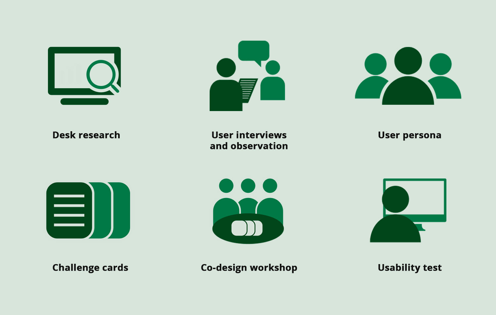
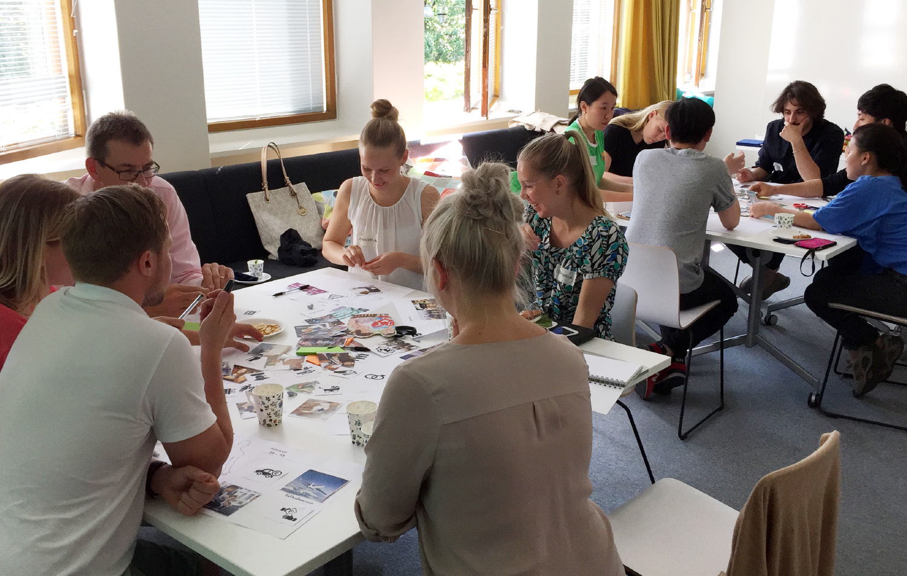
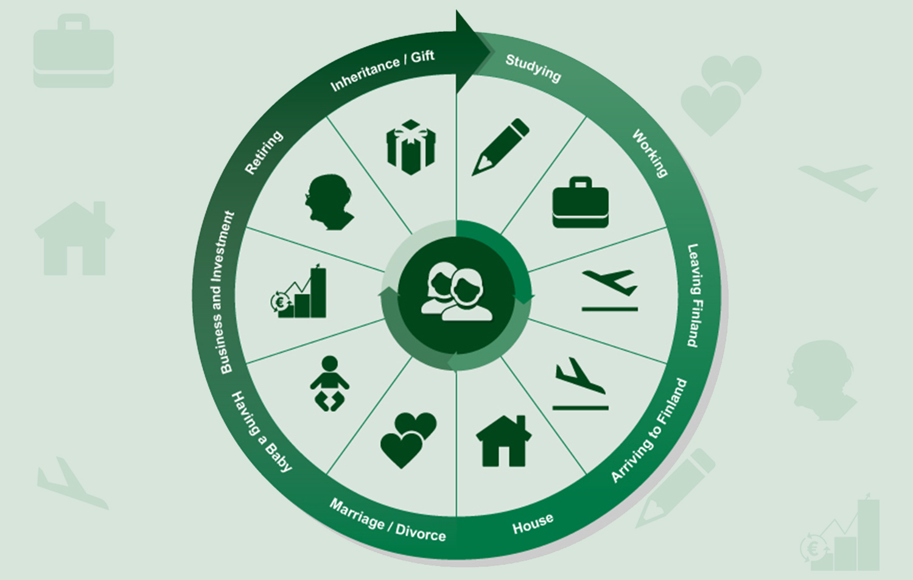
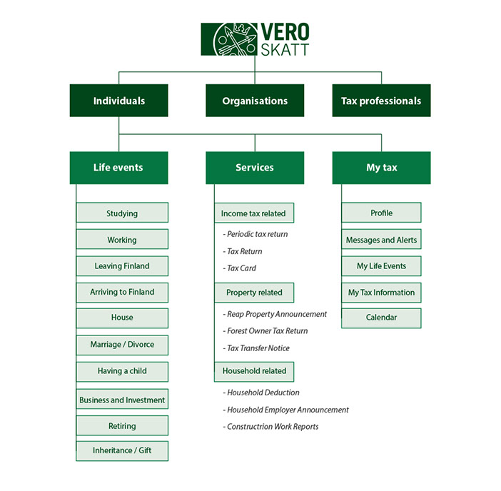
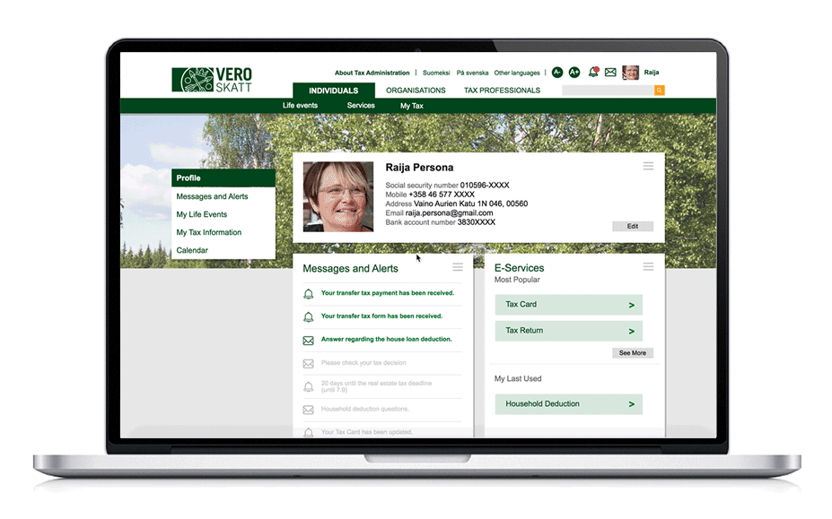

Life Relevant E-tax Service
A proposal for Vero.fi
Designers: Jaeyong Lee, Nghia Tran, Lotta Hankimo, Anni Leppanen
My Roles in the team: Design research, service design,Visual design, UI/UX design
Partnership: Verohallinto: Finnish Tax Administration
Vero.fi project was a proposal for Finnish Tax Administration during Information Technology Program (ITP) in Aalto University. To provide life-relevant taxation web services for citizens, our design team created two concepts: Life events for information categorization and My Tax for providing personalized customer-own information and services.
The final proposal was delivered to the organization and has contributed to build the new Vero.fi website.
Background
Verohallinto (the Finnish Tax Administration, Vero) desired to renew their main web page vero.fi in Autumn 2015. As a part of the multidisciplinary Aalto University minor program: Information Technology Program (ITP), our team had a task to redesign the web page and its layout with a specific focus on an individual user’s point of view.
As other European countries do, Finland collects a high-rate taxes from citizens’ income, corporate, property, VAT, pension and church. It is used for running most of crucial parts of the society such as public services, free educations, social security and so on. In that sense, the organization: Verohallinto, which collects the taxes and provides all tax-related services to the citizens has taken a significant role in the society.
Our main challenge was making impactful design ideas that can possibly solve diverse tax issues for citizens while reflecting users' contexts and needs as well as satisfying the goal of the organization: helping citizens to take their responsibilities in an easier way by providing a user-centered E-service.
Design Research
During this project, our team conducted various researches. It consisted of from the desk research investigating the organization and current system of the website to field researches including user interviews, observation, Co-Design workshops and more.
 Used methods in research phase“Maybe it’s just me - I feel stupid for not knowing how to use the online service.”
From an interviewee at Kaisaniemi Tax Office
User Persona
Personas that we created based on our researches was used for communication with tax administration to help them understand users’ perspective, as well as guiding our project to user-centeredness. The created personas were used to be dealt with in customer journey, service blueprint and stories.
Co-Design Workshop
Co-design workshop was held 15th of July with 9 participants and 4 facilitators to validate our design ideas and to co-create key web pages with users. During around 2 hours, participants and facilitators had created interesting insights about Vero services and ideas together, and the result was beneficial to move our initial ideas to the more practical level of web service design.
 Mood board activity during the workshop; People share their thoughts about taxes in everyday life contexts“I want to delete all the buttons and texts here, and just put two things: ‘individual & companies'.
“Not every Finn wants to be an expert in tax, but we want to fulfill our responsibilities.”
Participants from the co-design workshopDesign Concept
Based on the results of researches, we designed two main concepts: Life events for data categorizing method and My Tax for providing personalized customer-own information and services.
1. Life events
 Life events for information categorizationBy organizing information around people’s lives, we feed information right when they need it. They can easily relate themselves to life events, which cause changes in taxation. Then they can feel secured because all taxation issues related to life changes, which are new to them, have been dealt with as one. Furthermore, such life events are really common for everyone such as study, work, retirement or house purchase. By using this life event concept, Verohallinto can provide tailored information with one information architecture system only. To the next level, by knowing what customers are doing in one life event, the system can suggest suitable information and services for it and for the past or coming life events. By following this categorization method, Vero can improve considerably its search engine as well as its artificial-intelligence service.
2. MyTax
While life events concept is a way of organizing information, my tax is way of delivering personalized tax information and services in a tailored ways and as a one-stop shop for every tax related issue for one’s life. My tax provides tax insights of people taxation issues. So they can see how tax changes after their life changes due to life events. Furthermore, my tax provides secured and easy way of applying and managing e-services, communicating with tax officials and masters their taxation efficiently. Further explanation of this concept will be included in prototype demonstration.
Design Outcome
 Reorganized information structurePrototype
We created a working prototype based on our wireframes, and it was used to communicate with the organization and to visualize our core concepts.
 Working prototype